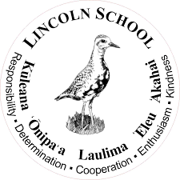
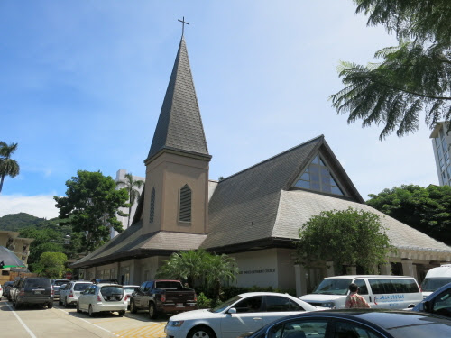
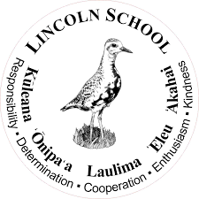
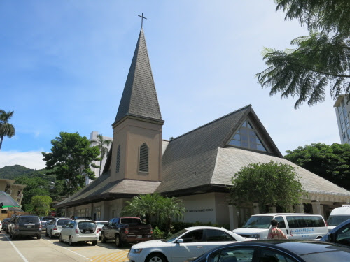

There have been many schools...
 



|
Kindergarten/Elementary School: I attended Gagok Kindergarten in Seoul, Korea, where I eventually graduated. The kindergarten and elementary school were connected to each other, making the transition between them seamless. After completing kindergarten, I moved on to Gagok Elementary School. In November of that same year, I immigrated to Hawaii due to my parents' job. Since I had not finished the first grade in Korea (as the korea school years ends in March), I had to retake first grade again in Hawaii. Elementary School: I transferred to Lincoln Elementary School in Hawaii during the winter semester of 1st grade. It was my first time transferring to a place outside of Seoul, which felt afriad. Also, due to the difference in school years, I had to retake first grade. Learning English for the first time felt very unfamiliar and challenging. Because I couldn't talk with people fluently I spend more time alone than with other people. Without having a good memories, I graduated. Korean School: At my parents' suggestion, I began attending a Korean school starting in second grade. This was mainly to address my writing and spelling difficulties. From then until sixth grade, I continued studying at the Korean school for my writing and spelling skills. A few times, I participated in writing and speaking contests organized by the Hawaii Korean community of education. I earned several high scores and even placed first in a speaking contest when I was in fifth grade, but I stopped attending when the COVID-19 pandemic hit. Middle School: After graduating from elementary school, I attended Stevenson Middle School. I don't have many vivid memories from middle school, largely due to the fact that it was only three years long. The first two years were disrupted by the COVID-19 pandemic, so I couldn't attend school properly, and in the third year, I was able to go to school wearing a mask. Despite these challenges, middle school brought many changes into my life. It was during this time that I began to focus more on learning and improving my grades. High School: After graduating from middle school, I attended Roosevelt high school. The strong foundation from middle school made it relatively easy to get A's in my classes. I also try out for new sports and fail. Meeting new friends on the swim team. And making some poor decisions regarding class choices, which I regretted later. To address these challenges, I took summer school and began preparing for the ACT and SAT for college. |